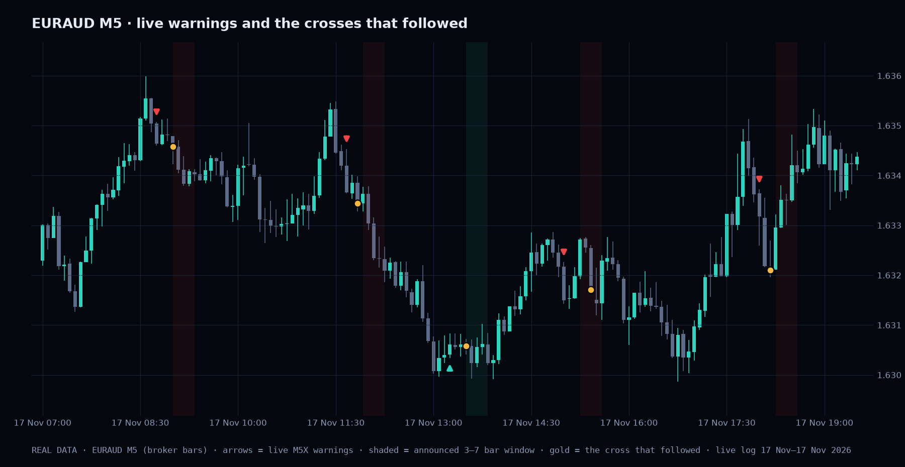

HLCI · حافظهی ۵ سالهی بازار
در هر کندل بستهی M5، HLCI بازار را با ۱۰۰ لحظهی بسیار مشابه از ۵ سال تاریخچهی همان نماد مقایسه میکند و میخواند بعد از آنها چه شد. فقط دادهی علّی: هرگز هیچ چیز از آینده.
3BAR ABI_PLUS 2.0 · هوش پیشکراس · متاتریدر ۵
اندیکاتوری برای متاتریدر ۵ که ۳ تا ۷ کندل M5 پیش از کراس مومنتوم به شما هشدار میدهد — و فقط وقتی که ۵ سال تاریخچهی خود همان نماد تأییدش کند. دیگر دنبال بازار نمیدوید؛ از قبل در جای درست منتظرید.

مسئله
تا وقتی چرخش مومنتوم آشکار شود، بهترین بخش حرکت معمولاً ساخته شده است. Pre-Cross ساخته شد تا همان چند دقیقهی گمشده را به شما برگرداند — با عدد، نه با امید.
چگونه کار میکند
در هر کندل بستهی M5، HLCI بازار را با ۱۰۰ لحظهی بسیار مشابه از ۵ سال تاریخچهی همان نماد مقایسه میکند و میخواند بعد از آنها چه شد. فقط دادهی علّی: هرگز هیچ چیز از آینده.
یک مدل یادگیری ماشین که روی ۲ سال و ۴ نماد آموزش دیده، کندلبهکندل احتمال اینکه کراس مومنتوم M5 در ۳ تا ۷ کندل بعد باشد را تخمین میزند.
M5X فقط وقتی حرف میزند که حافظهی تاریخی HLCI جهت را تأیید کند. آنوقت فلش روی چارت، پاپآپ، صدا و پوش روی گوشی میگیرید — همراه با بازهی زمانی دقیق.
شواهد، نه وعده
همهی تصویرهای زیر از کندلهای واقعی بروکر و ژورنال زندهی هشدارها در ۱۶ تا ۱۹ نوامبر ۲۰۲۶ ساخته شدهاند. هیچ چیز شبیهسازی نشده است.



خوانش صادقانه: هشدار، کراس مومنتوم را پیشبینی میکند، نه حرکت تضمینی قیمت یا سود. بعضی کراسها زودتر از بازه میآیند، بعضی دیرتر و چندتایی هرگز. ما همه را نشان میدهیم.
روی چارت شما
لایسنس حرفهای
USD 320
یک بار پرداخت · بدون اشتراک
همین حالا بخرید اول سؤال بپرسیدUSDT (TRC20 / BEP20) · بیتکوین · اتریوم · کارتبهکارت (ایران)
پرسشها
نه. هشدار روی کندل بستهی M5 صادر میشود و دقیقاً همانجا که رسم شد میماند. نتیجهاش — زودتر، در بازه، دیرتر یا بدون کراس — صادقانه روی پنل ثبت میشود.
در آزمون ۲ ساله ۷۵٫۶٪ از ۲٬۷۰۹ هشدار دقیقاً در بازهی ۳ تا ۷ کندل با کراس همراه شدند و در دادهی ۲۰۲۶، ۷۷٫۳٪. در اجرای زنده ۶۹ از ۷۷ هشدار ظرف ۷ کندل با کراس همراه بودند. این احتمال است، نه قطعیت.
نه. تحلیل و هشدار میدهد و هرگز سفارش باز، بسته یا ویرایش نمیکند.
EURAUD، AUDUSD، NZDUSD و USDCHF — هرکدام پایگاه ۵ سالهی خودش را دارد. مدل روی M5 کار میکند و علامتها روی هر چارت همان نماد رسم میشوند؛ M1 پیشنهاد میشود.
پس از تأیید پرداخت، بسته، راهنما و کلید لایسنس متصل به حساب MT5 شما ارسال میشود — معمولاً ظرف یک روز کاری.
بله، انتقال به حساب MT5 دیگر با درخواست از پشتیبانی ممکن است.
درخواست بازپرداخت با مشخصات سفارش از طریق پشتیبانی ثبت و هر مورد جداگانه بررسی میشود.
نه. راهنما را بخوانید، نتایج واقعی بالا را ببینید و پیش از خرید هر سؤالی دارید بپرسید.
پیش از آنکه ساخته شود آنجا باشید.
معامله ریسک بالایی دارد. 3BAR ABI_PLUS تحلیل و هشدار میدهد؛ توصیهی سرمایهگذاری نمیدهد و هرگز معامله انجام نمیدهد. آمار گذشته و زنده دربارهی هشدارهای کراس مومنتوم است، نه سود آینده.